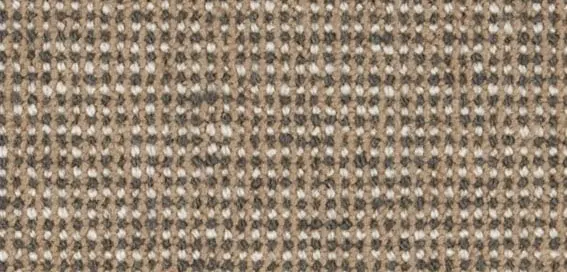
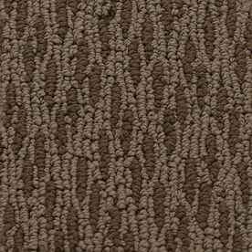
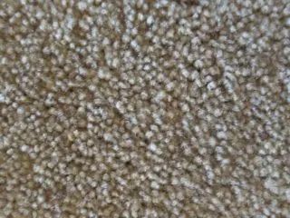
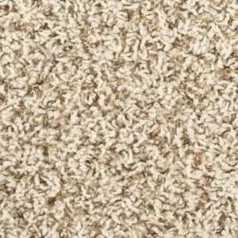
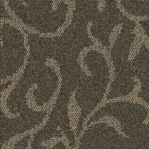

Handmade Carpet Rubs
Level Loop Pile carpet

A level loop design uses short loops where everything is carefully measured to where the loops are of the same length. This type is a little stiffer but it is perfectly appropriate for high traffic areas where durability and toughness are important.
Berber Loop Pile carpet

Berber is the most common type of loop pile option you can choose. This means that the fibers are bent into a series of loops. This establishes a durable carpet that resists stains although it does not have as much cushioning as other choices.
Multi level Loop Pile carpet

With a multi-level loop design, the tops of the loops will be varied by height, offering a more appealing design with series of visual flourishes. This is different from a patterned carpet in that all the threads are made into loops instead of just with cuts.
Saxony Cut Pile carpet

The Saxony style is a cut pile option where the fiber ends are cut as evenly as possible. In a Saxony arrangement, the fibers are packed tightly together. This creates a smoother appearance. The fibers are about half an inch high as well.
Textured Cut Pile carpet

The textured carpet style is another cut pile choice. The yarn used is twisted and then cut meaning the carpet is soft while the surface is twisted enough to create a more casual appearance.The twists are tight enough to offer stain resistance, meaning there is more durability and easier cleaning.
Acrylic carpet

Acrylic is made with a wool-like body that has a level of static and stain resistance that makes this variety particularly appealing for areas that might be susceptible to stains, and general wear and tear.
Wool carpet

You can always use real wool for your carpet if desired. Wool is appealing for how it features a series of carefully woven fibers that resist dirt. It can resist stains quite well.
Frieze Cut Pile carpet

The frieze choice uses short fibers that can curl in many directions. This establishes a sturdy look that can hide footprints although it is not necessarily made with heavy foot traffic in mind as too much traffic can cause excess fatigue in the area. It has an informal style and is often referred to as a shag pile carpet.
Triexta carpet

Triexta is a synthetic choice that has become popular in many homes with pets and kids. This is thanks to how the fibers are strong and not as likely to tear apart like others. Triexta carpeting is a powerful option but it can also be somewhat expensive, so may not be the best choice for those wishing to keep costs down.
Pattern (Cut and Looped) Pile carpet

A pattern arrangement uses a mix of cut and looped yarn spots. The specific areas where the yarn is looped versus where it is cut are planned out before the carpet is made, and is designed to establish a specific pattern.
Nylon carpet

Nylon carpeting is a very popular option, due to how strong and durable nylon is. Nylon fiber can resist soil and stay in its same shape for years without warping.
Olefin carpet

Olefin is a polypropylene compound that was originally used in outdoor situations for how well it can resist moisture. Today, it is used in indoor situations because olefin fibers offer a wool-like texture and are very strong.
Polyester carpet

Polyester carpeting is another popular option for those seeking toughness and durability in their floor coverings — without compromising on style. A prominent synthetic material, polyester can resist stains.